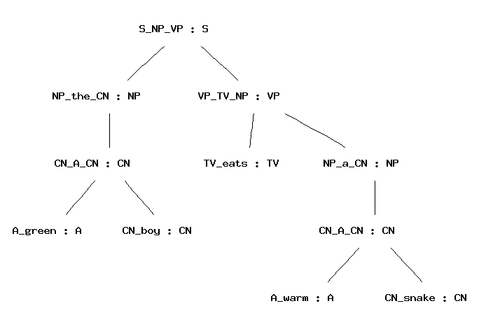
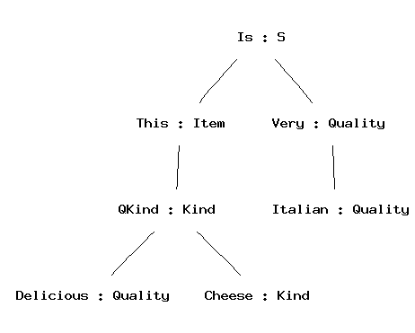
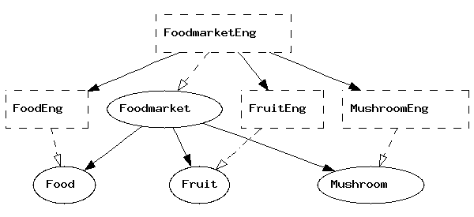
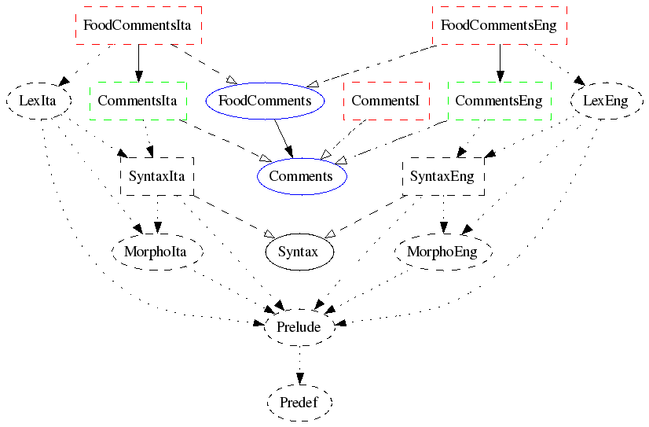
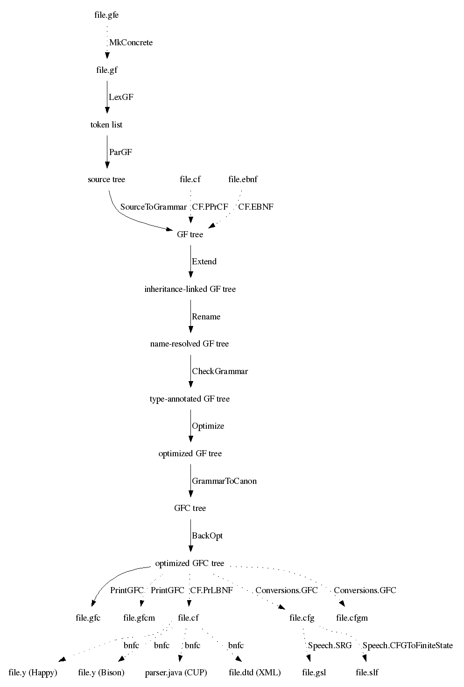

The term GF is used for different things:
This tutorial is primarily about the GF program and the GF programming language. It will guide you
A grammar is a definition of a language. From this definition, different language processing components can be derived:
A GF grammar can be seen as a declarative program from which these processing tasks can be automatically derived. In addition, many other tasks are readily available for GF grammars:
A typical GF application is based on a multilingual grammar involving translation on a special domain. Existing applications of this idea include
The specialization of a grammar to a domain makes it possible to obtain much better translations than in an unlimited machine translation system. This is due to the well-defined semantics of such domains. Grammars having this character are called application grammars. They are different from most grammars written by linguists just because they are multilingual and domain-specific.
However, there is another kind of grammars, which we call resource grammars. These are large, comprehensive grammars that can be used on any domain. The GF Resource Grammar Library has resource grammars for 10 languages. These grammars can be used as libraries to define application grammars. In this way, it is possible to write a high-quality grammar without knowing about linguistics: in general, to write an application grammar by using the resource library just requires practical knowledge of the target language. and all theoretical knowledge about its grammar is given by the libraries.
This tutorial is mainly for programmers who want to learn to write application grammars. It will go through GF's programming concepts without entering too deep into linguistics. Thus it should be accessible to anyone who has some previous programming experience.
A separate document is being written on how to write resource grammars. This includes the ways in which linguistic problems posed by different languages are solved in GF.
The tutorial gives a hands-on introduction to grammar writing. We start by building a small grammar for the domain of food: in this grammar, you can say things like
this Italian cheese is delicious
in English and Italian.
The first English grammar
food.cf
is written in a context-free
notation (also known as BNF). The BNF format is often a good
starting point for GF grammar development, because it is
simple and widely used. However, the BNF format is not
good for multilingual grammars. While it is possible to
"translate" by just changing the words contained in a
BNF grammar to words of some other
language, proper translation usually involves more.
For instance, the order of words may have to be changed:
Italian cheese ===> formaggio italiano
The full GF grammar format is designed to support such changes, by separating between the abstract syntax (the logical structure) and the concrete syntax (the sequence of words) of expressions.
There is more than words and word order that makes languages different. Words can have different forms, and which forms they have vary from language to language. For instance, Italian adjectives usually have four forms where English has just one:
delicious (wine, wines, pizza, pizzas)
vino delizioso, vini deliziosi, pizza deliziosa, pizze deliziose
The morphology of a language describes the forms of its words. While the complete description of morphology belongs to resource grammars, this tutorial will explain the programming concepts involved in morphology. This will moreover make it possible to grow the fragment covered by the food example. The tutorial will in fact build a toy resource grammar in order to illustrate the module structure of library-based application grammar writing.
Thus it is by elaborating the initial food.cf example that
the tutorial makes a guided tour through all concepts of GF.
While the constructs of the GF language are the main focus,
also the commands of the GF system are introduced as they
are needed.
To learn how to write GF grammars is not the only goal of this tutorial. To learn the commands of the GF system means that simple applications of grammars, such as translation and quiz systems, can be built simply by writing scripts for the system. More complicated applications, such as natural-language interfaces and dialogue systems, also require programming in some general-purpose language. We will briefly explain how GF grammars are used as components of Haskell, Java, and Prolog grammars. The tutorial concludes with a couple of case studies showing how such complete systems can be built.
The program is open-source free software, which you can download via the
GF Homepage:
http://www.cs.chalmers.se/~aarne/GF
There you can download
If you want to compile GF from source, you need Haskell and Java compilers. But normally you don't have to compile, and you definitely don't need to know Haskell or Java to use GF.
To start the GF program, assuming you have installed it, just type
% gf
in the shell. You will see GF's welcome message and the prompt >.
The command
> help
will give you a list of available commands.
As a common convention in this Tutorial, we will use
% as a prompt that marks system commands
> as a prompt that marks GF commands
Thus you should not type these prompts, but only the lines that follow them.
Now you are ready to try out your first grammar.
We start with one that is not written in GF language, but
in the ubiquitous BNF notation (Backus Naur Form), which GF can also
understand. Type (or copy) the following lines in a file named
food.cf:
S ::= Item "is" Quality ;
Item ::= "this" Kind | "that" Kind ;
Kind ::= Quality Kind ;
Kind ::= "wine" | "cheese" | "fish" ;
Quality ::= "very" Quality ;
Quality ::= "fresh" | "warm" | "Italian" | "expensive" | "delicious" | "boring" ;
This grammar defines a set of phrases usable to speak about food.
It builds sentences (S) by assigning Qualities to
Items. The grammar shows a typical character of GF grammars:
they are small grammars describing some more or less well-defined
domain, such as in this case food.
The first GF command when using a grammar is to import it.
The command has a long name, import, and a short name, i.
You can type either
```> import food.cf
or
```> i food.cf
to get the same effect. The effect is that the GF program compiles your grammar into an internal representation, and shows a new prompt when it is ready.
You can now use GF for parsing:
> parse "this cheese is delicious"
S_Item_is_Quality (Item_this_Kind Kind_cheese) Quality_delicious
> p "that wine is very very Italian"
S_Item_is_Quality (Item_that_Kind Kind_wine)
(Quality_very_Quality (Quality_very_Quality Quality_Italian))
The parse (= p) command takes a string
(in double quotes) and returns an abstract syntax tree - the thing
beginning with S_Item_Is_Quality. We will see soon how to make sense
of the abstract syntax trees - now you should just notice that the tree
is different for the two strings.
Strings that return a tree when parsed do so in virtue of the grammar you imported. Try parsing something else, and you fail
> p "hello world"
No success in cf parsing hello world
no tree found
You can also use GF for linearizing
(linearize = l). This is the inverse of
parsing, taking trees into strings:
> linearize S_Item_is_Quality (Item_that_Kind Kind_wine) Quality_warm
that wine is warm
What is the use of this? Typically not that you type in a tree at
the GF prompt. The utility of linearization comes from the fact that
you can obtain a tree from somewhere else. One way to do so is
random generation (generate_random = gr):
> generate_random
S_Item_is_Quality (Item_this_Kind Kind_wine) Quality_delicious
Now you can copy the tree and paste it to the linearize command.
Or, more efficiently, feed random generation into linearization by using
a pipe.
> gr | l
this fresh cheese is delicious
The gibberish code with parentheses returned by the parser does not
look like trees. Why is it called so? Trees are a data structure that
represent nesting: trees are branching entities, and the branches
are themselves trees. Parentheses give a linear representation of trees,
useful for the computer. But the human eye may prefer to see a visualization;
for this purpose, GF provides the command visualizre_tree = vt, to which
parsing (and any other tree-producing command) can be piped:
parse "this delicious cheese is very Italian" | vt

Random generation can be quite amusing. So you may want to generate ten strings with one and the same command:
> gr -number=10 | l
that wine is boring
that fresh cheese is fresh
that cheese is very boring
this cheese is Italian
that expensive cheese is expensive
that fish is fresh
that wine is very Italian
this wine is Italian
this cheese is boring
this fish is boring
To generate all sentence that a grammar
can generate, use the command generate_trees = gt.
> generate_trees | l
that cheese is very Italian
that cheese is very boring
that cheese is very delicious
that cheese is very expensive
that cheese is very fresh
...
this wine is expensive
this wine is fresh
this wine is warm
You get quite a few trees but not all of them: only up to a given
depth of trees. To see how you can get more, use the
help = h command,
help gt
Quiz. If the command gt generated all
trees in your grammar, it would never terminate. Why?
A pipe of GF commands can have any length, but the "output type" (either string or tree) of one command must always match the "input type" of the next command.
The intermediate results in a pipe can be observed by putting the
tracing flag -tr to each command whose output you
want to see:
> gr -tr | l -tr | p
S_Item_is_Quality (Item_this_Kind Kind_cheese) Quality_boring
this cheese is boring
S_Item_is_Quality (Item_this_Kind Kind_cheese) Quality_boring
This facility is good for test purposes: for instance, you may want to see if a grammar is ambiguous, i.e. contains strings that can be parsed in more than one way.
To save the outputs of GF commands into a file, you can
pipe it to the write_file = wf command,
> gr -number=10 | l | write_file exx.tmp
You can read the file back to GF with the
read_file = rf command,
> read_file exx.tmp | p -lines
Notice the flag -lines given to the parsing
command. This flag tells GF to parse each line of
the file separately. Without the flag, the grammar could
not recognize the string in the file, because it is not
a sentence but a sequence of ten sentences.
The syntax trees returned by GF's parser in the previous examples
are not so nice to look at. The identifiers that form the tree
are labels of the BNF rules. To see which label corresponds to
which rule, you can use the print_grammar = pg command
with the printer flag set to cf (which means context-free):
> print_grammar -printer=cf
S_Item_is_Quality. S ::= Item "is" Quality ;
Quality_Italian. Quality ::= "Italian" ;
Quality_boring. Quality ::= "boring" ;
Quality_delicious. Quality ::= "delicious" ;
Quality_expensive. Quality ::= "expensive" ;
Quality_fresh. Quality ::= "fresh" ;
Quality_very_Quality. Quality ::= "very" Quality ;
Quality_warm. Quality ::= "warm" ;
Kind_Quality_Kind. Kind ::= Quality Kind ;
Kind_cheese. Kind ::= "cheese" ;
Kind_fish. Kind ::= "fish" ;
Kind_wine. Kind ::= "wine" ;
Item_that_Kind. Item ::= "that" Kind ;
Item_this_Kind. Item ::= "this" Kind ;
A syntax tree such as
S_Item_is_Quality (Item_this_Kind Kind_wine) Quality_delicious
encodes the sequence of grammar rules used for building the
tree. If you look at this tree, you will notice that Item_this_Kind
is the label of the rule prefixing this to a Kind,
thereby forming an Item.
Kind_wine is the label of the kind "wine",
and so on. These labels are formed automatically when the grammar
is compiled by GF, in a way that guarantees that different rules
get different labels.
The labelled context-free grammar format permits user-defined
labels to each rule.
In files with the suffix .cf, you can prefix rules with
labels that you provide yourself - these may be more useful
than the automatically generated ones. The following is a possible
labelling of food.cf with nicer-looking labels.
Is. S ::= Item "is" Quality ;
That. Item ::= "that" Kind ;
This. Item ::= "this" Kind ;
QKind. Kind ::= Quality Kind ;
Cheese. Kind ::= "cheese" ;
Fish. Kind ::= "fish" ;
Wine. Kind ::= "wine" ;
Italian. Quality ::= "Italian" ;
Boring. Quality ::= "boring" ;
Delicious. Quality ::= "delicious" ;
Expensive. Quality ::= "expensive" ;
Fresh. Quality ::= "fresh" ;
Very. Quality ::= "very" Quality ;
Warm. Quality ::= "warm" ;
With this grammar, the trees look as follows:
> parse -tr "this delicious cheese is very Italian" | vt
Is (This (QKind Delicious Cheese)) (Very Italian)

To see what there is in GF's shell state when a grammar
has been imported, you can give the plain command
print_grammar = pg.
> print_grammar
The output is quite unreadable at this stage, and you may feel happy that you did not need to write the grammar in that notation, but that the GF grammar compiler produced it.
However, we will now start the demonstration
how GF's own notation gives you
much more expressive power than the .cf
format. We will introduce the .gf format by presenting
one more way of defining the same grammar as in
food.cf.
Then we will show how the full GF grammar format enables you
to do things that are not possible in the weaker formats.
A GF grammar consists of two main parts:
The CF format fuses these two things together, but it is possible to take them apart. For instance, the sentence formation rule
Is. S ::= Item "is" Quality ;
is interpreted as the following pair of rules:
fun Is : Item -> Quality -> S ;
lin Is item quality = {s = item.s ++ "is" ++ quality.s} ;
The former rule, with the keyword fun, belongs to the abstract syntax.
It defines the function
Is which constructs syntax trees of form
(Is item quality).
The latter rule, with the keyword lin, belongs to the concrete syntax.
It defines the linearization function for
syntax trees of form (Is item quality).
Rules in a GF grammar are called judgements, and the keywords
fun and lin are used for distinguishing between two
judgement forms. Here is a summary of the most important
judgement forms:
| form | reading |
cat C |
C is a category |
fun f : A |
f is a function of type A |
| form | reading |
lincat C = T |
category C has linearization type T |
lin f = t |
function f has linearization t |
We return to the precise meanings of these judgement forms later. First we will look at how judgements are grouped into modules, and show how the food grammar is expressed by using modules and judgements.
A GF grammar consists of modules, into which judgements are grouped. The most important module forms are
abstract A = M, abstract syntax A with judgements in
the module body M.
concrete C of A = M, concrete syntax C of the
abstract syntax A, with judgements in the module body M.
The linearization type of a category is a record type, with zero of more fields of different types. The simplest record type used for linearization in GF is
{s : Str}
which has one field, with label s and type Str.
Examples of records of this type are
{s = "foo"}
{s = "hello" ++ "world"}
Whenever a record r of type {s : Str} is given,
r.s is an object of type Str. This is
a special case of the projection rule, allowing the extraction
of fields from a record:
{ ... p : T ... } then r.p : T
The type Str is really the type of token lists, but
most of the time one can conveniently think of it as the type of strings,
denoted by string literals in double quotes.
Notice that
"hello world"
is not recommended as an expression of type Str. It denotes
a token with a space in it, and will usually
not work with the lexical analysis that precedes parsing. A shorthand
exemplified by
["hello world and people"] === "hello" ++ "world" ++ "and" ++ "people"
can be used for lists of tokens. The expression
[]
denotes the empty token list.
To express the abstract syntax of food.cf in
a file Food.gf, we write two kinds of judgements:
cat judgement.
fun judgement,
with the type formed from the nonterminals of the rule.
abstract Food = {
cat
S ; Item ; Kind ; Quality ;
fun
Is : Item -> Quality -> S ;
This, That : Kind -> Item ;
QKind : Quality -> Kind -> Kind ;
Wine, Cheese, Fish : Kind ;
Very : Quality -> Quality ;
Fresh, Warm, Italian, Expensive, Delicious, Boring : Quality ;
}
Notice the use of shorthands permitting the sharing of
the keyword in subsequent judgements, and of the type
in subsequent fun judgements.
Each category introduced in Food.gf is
given a lincat rule, and each
function is given a lin rule. Similar shorthands
apply as in abstract modules.
concrete FoodEng of Food = {
lincat
S, Item, Kind, Quality = {s : Str} ;
lin
Is item quality = {s = item.s ++ "is" ++ quality.s} ;
This kind = {s = "this" ++ kind.s} ;
That kind = {s = "that" ++ kind.s} ;
QKind quality kind = {s = quality.s ++ kind.s} ;
Wine = {s = "wine"} ;
Cheese = {s = "cheese"} ;
Fish = {s = "fish"} ;
Very quality = {s = "very" ++ quality.s} ;
Fresh = {s = "fresh"} ;
Warm = {s = "warm"} ;
Italian = {s = "Italian"} ;
Expensive = {s = "expensive"} ;
Delicious = {s = "delicious"} ;
Boring = {s = "boring"} ;
}
Module name + .gf = file name
Each module is compiled into a .gfc file.
Import FoodEng.gf and see what happens
> i FoodEng.gf
The GF program does not only read the file
FoodEng.gf, but also all other files that it
depends on - in this case, Food.gf.
For each file that is compiled, a .gfc file
is generated. The GFC format (="GF Canonical") is the
"machine code" of GF, which is faster to process than
GF source files. When reading a module, GF decides whether
to use an existing .gfc file or to generate
a new one, by looking at modification times.
The main advantage of separating abstract from concrete syntax is that one abstract syntax can be equipped with many concrete syntaxes. A system with this property is called a multilingual grammar.
Multilingual grammars can be used for applications such as
translation. Let us build an Italian concrete syntax for
Food and then test the resulting
multilingual grammar.
concrete FoodIta of Food = {
lincat
S, Item, Kind, Quality = {s : Str} ;
lin
Is item quality = {s = item.s ++ "è" ++ quality.s} ;
This kind = {s = "questo" ++ kind.s} ;
That kind = {s = "quello" ++ kind.s} ;
QKind quality kind = {s = kind.s ++ quality.s} ;
Wine = {s = "vino"} ;
Cheese = {s = "formaggio"} ;
Fish = {s = "pesce"} ;
Very quality = {s = "molto" ++ quality.s} ;
Fresh = {s = "fresco"} ;
Warm = {s = "caldo"} ;
Italian = {s = "italiano"} ;
Expensive = {s = "caro"} ;
Delicious = {s = "delizioso"} ;
Boring = {s = "noioso"} ;
}
Import the two grammars in the same GF session.
> i FoodEng.gf
> i FoodIta.gf
Try generation now:
> gr | l
quello formaggio molto noioso è italiano
> gr | l -lang=FoodEng
this fish is warm
Translate by using a pipe:
> p -lang=FoodEng "this cheese is very delicious" | l -lang=FoodIta
questo formaggio è molto delizioso
The lang flag tells GF which concrete syntax to use in parsing and
linearization. By default, the flag is set to the last-imported grammar.
To see what grammars are in scope and which is the main one, use the command
print_options = po:
> print_options
main abstract : Food
main concrete : FoodIta
actual concretes : FoodIta FoodEng
If translation is what you want to do with a set of grammars, a convenient
way to do it is to open a translation_session = ts. In this session,
you can translate between all the languages that are in scope.
A dot . terminates the translation session.
> ts
trans> that very warm cheese is boring
quello formaggio molto caldo è noioso
that very warm cheese is boring
trans> questo vino molto italiano è molto delizioso
questo vino molto italiano è molto delizioso
this very Italian wine is very delicious
trans> .
>
This is a simple language exercise that can be automatically
generated from a multilingual grammar. The system generates a set of
random sentences, displays them in one language, and checks the user's
answer given in another language. The command translation_quiz = tq
makes this in a subshell of GF.
> translation_quiz FoodEng FoodIta
Welcome to GF Translation Quiz.
The quiz is over when you have done at least 10 examples
with at least 75 % success.
You can interrupt the quiz by entering a line consisting of a dot ('.').
this fish is warm
questo pesce è caldo
> Yes.
Score 1/1
this cheese is Italian
questo formaggio è noioso
> No, not questo formaggio è noioso, but
questo formaggio è italiano
Score 1/2
this fish is expensive
You can also generate a list of translation exercises and save it in a
file for later use, by the command translation_list = tl
> translation_list -number=25 FoodEng FoodIta
The number flag gives the number of sentences generated.
The module system of GF makes it possible to extend a
grammar in different ways. The syntax of extension is
shown by the following example. We extend Food by
adding a category of questions and two new functions.
abstract Morefood = Food ** {
cat
Question ;
fun
QIs : Item -> Quality -> Question ;
Pizza : Kind ;
}
Parallel to the abstract syntax, extensions can be built for concrete syntaxes:
concrete MorefoodEng of Morefood = FoodEng ** {
lincat
Question = {s : Str} ;
lin
QIs item quality = {s = "is" ++ item.s ++ quality.s} ;
Pizza = {s = "pizza"} ;
}
The effect of extension is that all of the contents of the extended and extending module are put together.
Specialized vocabularies can be represented as small grammars that only do "one thing" each. For instance, the following are grammars for fruit and mushrooms
abstract Fruit = {
cat Fruit ;
fun Apple, Peach : Fruit ;
}
abstract Mushroom = {
cat Mushroom ;
fun Cep, Agaric : Mushroom ;
}
They can afterwards be combined into bigger grammars by using multiple inheritance, i.e. extension of several grammars at the same time:
abstract Foodmarket = Food, Fruit, Mushroom ** {
fun
FruitKind : Fruit -> Kind ;
MushroomKind : Mushroom -> Kind ;
}
At this point, you would perhaps like to go back to
Food and take apart Wine to build a special
Drink module.
When you have created all the abstract syntaxes and
one set of concrete syntaxes needed for Foodmarket,
your grammar consists of eight GF modules. To see how their
dependences look like, you can use the command
visualize_graph = vg,
> visualize_graph
and the graph will pop up in a separate window.
The graph uses

To document your grammar, you may want to print the
graph into a file, e.g. a .png file that
can be included in an HTML document. You can do this
by first printing the graph into a file .dot and then
processing this file with the dot program.
> pm -printer=graph | wf Foodmarket.dot
> ! dot -Tpng Foodmarket.dot > Foodmarket.png
The latter command is a Unix command, issued from GF by using the
shell escape symbol !. The resulting graph was shown in the previous section.
The command print_multi = pm is used for printing the current multilingual
grammar in various formats, of which the format -printer=graph just
shows the module dependencies. Use help to see what other formats
are available:
> help pm
> help -printer
In comparison to the .cf format, the .gf format looks rather
verbose, and demands lots more characters to be written. You have probably
done this by the copy-paste-modify method, which is a common way to
avoid repeating work.
However, there is a more elegant way to avoid repeating work than the copy-and-paste method. The golden rule of functional programming says that
A function separates the shared parts of different computations from the changing parts, parameters. In functional programming languages, such as Haskell, it is possible to share much more than in languages such as C and Java.
GF is a functional programming language, not only in the sense that
the abstract syntax is a system of functions (fun), but also because
functional programming can be used to define concrete syntax. This is
done by using a new form of judgement, with the keyword oper (for
operation), distinct from fun for the sake of clarity.
Here is a simple example of an operation:
oper ss : Str -> {s : Str} = \x -> {s = x} ;
The operation can be applied to an argument, and GF will compute the application into a value. For instance,
ss "boy" ---> {s = "boy"}
(We use the symbol ---> to indicate how an expression is
computed into a value; this symbol is not a part of GF)
Thus an oper judgement includes the name of the defined operation,
its type, and an expression defining it. As for the syntax of the defining
expression, notice the lambda abstraction form \x -> t of
the function.
Operator definitions can be included in a concrete syntax. But they are not really tied to a particular set of linearization rules. They should rather be seen as resources usable in many concrete syntaxes.
The resource module type can be used to package
oper definitions into reusable resources. Here is
an example, with a handful of operations to manipulate
strings and records.
resource StringOper = {
oper
SS : Type = {s : Str} ;
ss : Str -> SS = \x -> {s = x} ;
cc : SS -> SS -> SS = \x,y -> ss (x.s ++ y.s) ;
prefix : Str -> SS -> SS = \p,x -> ss (p ++ x.s) ;
}
Resource modules can extend other resource modules, in the same way as modules of other types can extend modules of the same type. Thus it is possible to build resource hierarchies.
Any number of resource modules can be
opened in a concrete syntax, which
makes definitions contained
in the resource usable in the concrete syntax. Here is
an example, where the resource StringOper is
opened in a new version of FoodEng.
concrete Food2Eng of Food = open StringOper in {
lincat
S, Item, Kind, Quality = SS ;
lin
Is item quality = cc item (prefix "is" quality) ;
This = prefix "this" ;
That = prefix "that" ;
QKind = cc ;
Wine = ss "wine" ;
Cheese = ss "cheese" ;
Fish = ss "fish" ;
Very = prefix "very" ;
Fresh = ss "fresh" ;
Warm = ss "warm" ;
Italian = ss "Italian" ;
Expensive = ss "expensive" ;
Delicious = ss "delicious" ;
Boring = ss "boring" ;
}
The same string operations could be use to write FoodIta
more concisely.
Using operations defined in resource modules is a way to avoid repetitive code. In addition, it enables a new kind of modularity and division of labour in grammar writing: grammarians familiar with the linguistic details of a language can put this knowledge available through resource grammar modules, whose users only need to pick the right operations and not to know their implementation details.
Suppose we want to say, with the vocabulary included in
Food.gf, things like
all Italian wines are delicious
The new grammatical facility we need are the plural forms of nouns and verbs (wines, are), as opposed to their singular forms.
The introduction of plural forms requires two things:
Different languages have different rules of inflection and agreement. For instance, Italian has also agreement in gender (masculine vs. feminine). We want to express such special features of languages in the concrete syntax while ignoring them in the abstract syntax.
To be able to do all this, we need one new judgement form and many new expression forms. We also need to generalize linearization types from strings to more complex types.
We define the parameter type of number in Englisn by using a new form of judgement:
param Number = Sg | Pl ;
To express that Kind expressions in English have a linearization
depending on number, we replace the linearization type {s : Str}
with a type where the s field is a table depending on number:
lincat Kind = {s : Number => Str} ;
The table type Number => Str is in many respects similar to
a function type (Number -> Str). The main difference is that the
argument type of a table type must always be a parameter type. This means
that the argument-value pairs can be listed in a finite table. The following
example shows such a table:
lin Cheese = {s = table {
Sg => "cheese" ;
Pl => "cheeses"
}
} ;
The application of a table to a parameter is done by the selection
operator !. For instance,
table {Sg => "cheese" ; Pl => "cheeses"} ! Pl
is a selection, whose value is "cheeses".
All English common nouns are inflected in number, most of them in the same way: the plural form is formed from the singular form by adding the ending s. This rule is an example of a paradigm - a formula telling how the inflection forms of a word are formed.
From GF point of view, a paradigm is a function that takes a lemma -
also known as a dictionary form - and returns an inflection
table of desired type. Paradigms are not functions in the sense of the
fun judgements of abstract syntax (which operate on trees and not
on strings), but operations defined in oper judgements.
The following operation defines the regular noun paradigm of English:
oper regNoun : Str -> {s : Number => Str} = \x -> {
s = table {
Sg => x ;
Pl => x + "s"
}
} ;
The gluing operator + tells that
the string held in the variable x and the ending "s"
are written together to form one token. Thus, for instance,
(regNoun "cheese").s ! Pl ---> "cheese" + "s" ---> "cheeses"
Some English nouns, such as mouse, are so irregular that
it makes no sense to see them as instances of a paradigm. Even
then, it is useful to perform data abstraction from the
definition of the type Noun, and introduce a constructor
operation, a worst-case function for nouns:
oper mkNoun : Str -> Str -> Noun = \x,y -> {
s = table {
Sg => x ;
Pl => y
}
} ;
Thus we could define
lin Mouse = mkNoun "mouse" "mice" ;
and
oper regNoun : Str -> Noun = \x ->
mkNoun x (x + "s") ;
instead of writing the inflection table explicitly.
The grammar engineering advantage of worst-case functions is that
the author of the resource module may change the definitions of
Noun and mkNoun, and still retain the
interface (i.e. the system of type signatures) that makes it
correct to use these functions in concrete modules. In programming
terms, Noun is then treated as an abstract datatype.
In addition to the completely regular noun paradigm regNoun,
some other frequent noun paradigms deserve to be
defined, for instance,
sNoun : Str -> Noun = \kiss -> mkNoun kiss (kiss + "es") ;
What about nouns like fly, with the plural flies? The already available solution is to use the longest common prefix fl (also known as the technical stem) as argument, and define
yNoun : Str -> Noun = \fl -> mkNoun (fl + "y") (fl + "ies") ;
But this paradigm would be very unintuitive to use, because the technical stem
is not an existing form of the word. A better solution is to use
the lemma and a string operator init, which returns the initial segment (i.e.
all characters but the last) of a string:
yNoun : Str -> Noun = \fly -> mkNoun fly (init fly + "ies") ;
The operator init belongs to a set of operations in the
resource module Prelude, which therefore has to be
opened so that init can be used.
It may be hard for the user of a resource morphology to pick the right
inflection paradigm. A way to help this is to define a more intelligent
paradigm, which chooses the ending by first analysing the lemma.
The following variant for English regular nouns puts together all the
previously shown paradigms, and chooses one of them on the basis of
the final letter of the lemma (found by the prelude operator last).
regNoun : Str -> Noun = \s -> case last s of {
"s" | "z" => mkNoun s (s + "es") ;
"y" => mkNoun s (init s + "ies") ;
_ => mkNoun s (s + "s")
} ;
This definition displays many GF expression forms not shown befores; these forms are explained in the next section.
The paradigms regNoun does not give the correct forms for
all nouns. For instance, mouse - mice and
fish - fish must be given by using mkNoun.
Also the word boy would be inflected incorrectly; to prevent
this, either use mkNoun or modify
regNoun so that the "y" case does not
apply if the second-last character is a vowel.
Expressions of the table form are built from lists of
argument-value pairs. These pairs are called the branches
of the table. In addition to constants introduced in
param definitions, the left-hand side of a branch can more
generally be a pattern, and the computation of selection is
then performed by pattern matching:
_ matches anything
"s", matches the same string
P | ... | Q matches anything that
one of the disjuncts matches
Pattern matching is performed in the order in which the branches appear in the table: the branch of the first matching pattern is followed.
As syntactic sugar, one-branch tables can be written concisely,
\\P,...,Q => t === table {P => ... table {Q => t} ...}
Finally, the case expressions common in functional
programming languages are syntactic sugar for table selections:
case e of {...} === table {...} ! e
A common idiom is to
gather the oper and param definitions
needed for inflecting words in
a language into a morphology module. Here is a simple
example, MorphoEng.
--# -path=.:prelude
resource MorphoEng = open Prelude in {
param
Number = Sg | Pl ;
oper
Noun, Verb : Type = {s : Number => Str} ;
mkNoun : Str -> Str -> Noun = \x,y -> {
s = table {
Sg => x ;
Pl => y
}
} ;
regNoun : Str -> Noun = \s -> case last s of {
"s" | "z" => mkNoun s (s + "es") ;
"y" => mkNoun s (init s + "ies") ;
_ => mkNoun s (s + "s")
} ;
mkVerb : Str -> Str -> Verb = \x,y -> mkNoun y x ;
regVerb : Str -> Verb = \s -> case last s of {
"s" | "z" => mkVerb s (s + "es") ;
"y" => mkVerb s (init s + "ies") ;
"o" => mkVerb s (s + "es") ;
_ => mkVerb s (s + "s")
} ;
}
The first line gives as a hint to the compiler the
search path needed to find all the other modules that the
module depends on. The directory prelude is a subdirectory of
GF/lib; to be able to refer to it in this simple way, you can
set the environment variable GF_LIB_PATH to point to this
directory.
To test a resource module independently, you can import it
with a flag that tells GF to retain the oper definitions
in the memory; the usual behaviour is that oper definitions
are just applied to compile linearization rules
(this is called inlining) and then thrown away.
> i -retain MorphoEng.gf
The command compute_concrete = cc computes any expression
formed by operations and other GF constructs. For example,
> cc regVerb "echo"
{s : Number => Str = table Number {
Sg => "echoes" ;
Pl => "echo"
}
}
The command show_operations = so` shows the type signatures
of all operations returning a given value type:
> so Verb
MorphoEng.mkNoun : Str -> Str -> {s : {MorphoEng.Number} => Str}
MorphoEng.mkVerb : Str -> Str -> {s : {MorphoEng.Number} => Str}
MorphoEng.regNoun : Str -> {s : {MorphoEng.Number} => Str}
MorphoEng.regVerb : Str -> { s : {MorphoEng.Number} => Str}
Why does the command also show the operations that form
Nouns? The reason is that the type expression
Verb is first computed, and its value happens to be
the same as the value of Noun.
We can now enrich the concrete syntax definitions to comprise morphology. This will involve a more radical variation between languages (e.g. English and Italian) then just the use of different words. In general, parameters and linearization types are different in different languages - but this does not prevent the use of a common abstract syntax.
The rule of subject-verb agreement in English says that the verb phrase must be inflected in the number of the subject. This means that a noun phrase (functioning as a subject), inherently has a number, which it passes to the verb. The verb does not have a number, but must be able to receive whatever number the subject has. This distinction is nicely represented by the different linearization types of noun phrases and verb phrases:
lincat NP = {s : Str ; n : Number} ;
lincat VP = {s : Number => Str} ;
We say that the number of NP is an inherent feature,
whereas the number of NP is a variable feature (or a
parametric feature).
The agreement rule itself is expressed in the linearization rule of the predication structure:
lin PredVP np vp = {s = np.s ++ vp.s ! np.n} ;
The following section will present
FoodsEng, assuming the abstract syntax Foods
that is similar to Food but also has the
plural determiners These and Those.
The reader is invited to inspect the way in which agreement works in
the formation of sentences.
The grammar uses both
Prelude and
MorphoEng.
We will later see how to make the grammar even
more high-level by using a resource grammar library
and parametrized modules.
--# -path=.:resource:prelude
concrete FoodsEng of Foods = open Prelude, MorphoEng in {
lincat
S, Quality = SS ;
Kind = {s : Number => Str} ;
Item = {s : Str ; n : Number} ;
lin
Is item quality = ss (item.s ++ (mkVerb "are" "is").s ! item.n ++ quality.s) ;
This = det Sg "this" ;
That = det Sg "that" ;
These = det Pl "these" ;
Those = det Pl "those" ;
QKind quality kind = {s = \\n => quality.s ++ kind.s ! n} ;
Wine = regNoun "wine" ;
Cheese = regNoun "cheese" ;
Fish = mkNoun "fish" "fish" ;
Very = prefixSS "very" ;
Fresh = ss "fresh" ;
Warm = ss "warm" ;
Italian = ss "Italian" ;
Expensive = ss "expensive" ;
Delicious = ss "delicious" ;
Boring = ss "boring" ;
oper
det : Number -> Str -> Noun -> {s : Str ; n : Number} = \n,d,cn -> {
s = d ++ cn.s ! n ;
n = n
} ;
}
The reader familiar with a functional programming language such as
Haskell must have noticed the similarity
between parameter types in GF and algebraic datatypes (data definitions
in Haskell). The GF parameter types are actually a special case of algebraic
datatypes: the main restriction is that in GF, these types must be finite.
(It is this restriction that makes it possible to invert linearization rules into
parsing methods.)
However, finite is not the same thing as enumerated. Even in GF, parameter constructors can take arguments, provided these arguments are from other parameter types - only recursion is forbidden. Such parameter types impose a hierarchic order among parameters. They are often needed to define the linguistically most accurate parameter systems.
To give an example, Swedish adjectives
are inflected in number (singular or plural) and
gender (uter or neuter). These parameters would suggest 2*2=4 different
forms. However, the gender distinction is done only in the singular. Therefore,
it would be inaccurate to define adjective paradigms using the type
Gender => Number => Str. The following hierarchic definition
yields an accurate system of three adjectival forms.
param AdjForm = ASg Gender | APl ;
param Gender = Utr | Neutr ;
Here is an example of pattern matching, the paradigm of regular adjectives.
oper regAdj : Str -> AdjForm => Str = \fin -> table {
ASg Utr => fin ;
ASg Neutr => fin + "t" ;
APl => fin + "a" ;
}
A constructor can be used as a pattern that has patterns as arguments. For instance, the adjectival paradigm in which the two singular forms are the same, can be defined
oper plattAdj : Str -> AdjForm => Str = \platt -> table {
ASg _ => platt ;
APl => platt + "a" ;
}
Even though morphology is in GF
mostly used as an auxiliary for syntax, it
can also be useful on its own right. The command morpho_analyse = ma
can be used to read a text and return for each word the analyses that
it has in the current concrete syntax.
> rf bible.txt | morpho_analyse
In the same way as translation exercises, morphological exercises can
be generated, by the command morpho_quiz = mq. Usually,
the category is set to be something else than S. For instance,
> i lib/resource/french/VerbsFre.gf
> morpho_quiz -cat=V
Welcome to GF Morphology Quiz.
...
réapparaître : VFin VCondit Pl P2
réapparaitriez
> No, not réapparaitriez, but
réapparaîtriez
Score 0/1
Finally, a list of morphological exercises can be generated
off-line saved in a
file for later use, by the command morpho_list = ml
> morpho_list -number=25 -cat=V | wf exx.txt
The number flag gives the number of exercises generated.
A linearization type may contain more strings than one. An example of where this is useful are English particle verbs, such as switch off. The linearization of a sentence may place the object between the verb and the particle: he switched it off.
The following judgement defines transitive verbs as discontinuous constituents, i.e. as having a linearization type with two strings and not just one.
lincat TV = {s : Number => Str ; part : Str} ;
This linearization rule shows how the constituents are separated by the object in complementization.
lin PredTV tv obj = {s = \\n => tv.s ! n ++ obj.s ++ tv.part} ;
There is no restriction in the number of discontinuous constituents
(or other fields) a lincat may contain. The only condition is that
the fields must be of finite types, i.e. built from records, tables,
parameters, and Str, and not functions.
A mathematical result
about parsing in GF says that the worst-case complexity of parsing
increases with the number of discontinuous constituents. This is
potentially a reason to avoid discontinuous constituents.
Moreover, the parsing and linearization commands only give accurate
results for categories whose linearization type has a unique Str
valued field labelled s. Therefore, discontinuous constituents
are not a good idea in top-level categories accessed by the users
of a grammar application.
Local definitions ("let expressions") are used in functional
programming for two reasons: to structure the code into smaller
expressions, and to avoid repeated computation of one and
the same expression. Here is an example, from
``MorphoIta:
oper regNoun : Str -> Noun = \vino ->
let
vin = init vino ;
o = last vino
in
case o of {
"a" => mkNoun Fem vino (vin + "e") ;
"o" | "e" => mkNoun Masc vino (vin + "i") ;
_ => mkNoun Masc vino vino
} ;
Sometimes there are many alternative ways to define a concrete syntax.
For instance, the verb negation in English can be expressed both by
does not and doesn't. In linguistic terms, these expressions
are in free variation. The variants construct of GF can
be used to give a list of strings in free variation. For example,
NegVerb verb = {s = variants {["does not"] ; "doesn't} ++ verb.s ! Pl} ;
An empty variant list
variants {}
can be used e.g. if a word lacks a certain form.
In general, variants should be used cautiously. It is not
recommended for modules aimed to be libraries, because the
user of the library has no way to choose among the variants.
Moreover, variants is only defined for basic types (Str
and parameter types). The grammar compiler will admit
variants for any types, but it will push it to the
level of basic types in a way that may be unwanted.
For instance, German has two words meaning "car",
Wagen, which is Masculine, and Auto, which is Neuter.
However, if one writes
variants {{s = "Wagen" ; g = Masc} ; {s = "Auto" ; g = Neutr}}
this will compute to
{s = variants {"Wagen" ; "Auto"} ; g = variants {Masc ; Neutr}}
which will also accept erroneous combinations of strings and genders.
Record types and records can be extended with new fields. For instance,
in German it is natural to see transitive verbs as verbs with a case.
The symbol ** is used for both constructs.
lincat TV = Verb ** {c : Case} ;
lin Follow = regVerb "folgen" ** {c = Dative} ;
To extend a record type or a record with a field whose label it already has is a type error.
A record type T is a subtype of another one R, if T has all the fields of R and possibly other fields. For instance, an extension of a record type is always a subtype of it.
If T is a subtype of R, an object of T can be used whenever an object of R is required. For instance, a transitive verb can be used whenever a verb is required.
Contravariance means that a function taking an R as argument can also be applied to any object of a subtype T.
Product types and tuples are syntactic sugar for record types and records:
T1 * ... * Tn === {p1 : T1 ; ... ; pn : Tn}
<t1, ..., tn> === {p1 = T1 ; ... ; pn = Tn}
Thus the labels p1, p2,...` are hard-coded.
Record types of parameter types are also parameter types. A typical example is a record of agreement features, e.g. French
oper Agr : PType = {g : Gender ; n : Number ; p : Person} ;
Notice the term PType rather than just Type referring to
parameter types. Every PType is also a Type.
Pattern matching is done in the expected way, but it can moreover utilize partial records: the branch
{g = Fem} => t
in a table of type Agr => T means the same as
{g = Fem ; n = _ ; p = _} => t
Tuple patterns are translated to record patterns in the same way as tuples to records; partial patterns make it possible to write, slightly surprisingly,
case <g,n,p> of {
<Fem> => t
...
}
To define string operations computed at compile time, such as in morphology, it is handy to use regular expression patterns:
+ q : token consisting of p followed by q
* : token p repeated 0 or more times
(max the length of the string to be matched)
- p : matches anything that p does not match
@ p : bind to x what p matches
| q : matches what either p or q matches
The last three apply to all types of patterns, the first two only to token strings. Example: plural formation in Swedish 2nd declension (pojke-pojkar, nyckel-nycklar, seger-segrar, bil-bilar):
plural2 : Str -> Str = \w -> case w of {
pojk + "e" => pojk + "ar" ;
nyck + "e" + l@("l" | "r" | "n") => nyck + l + "ar" ;
bil => bil + "ar"
} ;
Another example: English noun plural formation.
plural : Str -> Str = \w -> case w of {
_ + ("s" | "z" | "x" | "sh") => w + "es" ;
_ + ("a" | "o" | "u" | "e") + "y" => w + "s" ;
x + "y" => x + "ies" ;
_ => w + "s"
} ;
Semantics: variables are always bound to the first match, which is the first
in the sequence of binding lists Match p v defined as follows. In the definition,
p is a pattern and v is a value.
Match (p1|p2) v = Match p1 v ++ Match p2 v
Match (p1+p2) s = [Match p1 s1 ++ Match p2 s2 |
i <- [0..length s], (s1,s2) = splitAt i s]
Match p* s = [[]] if Match "" s ++ Match p s ++ Match (p+p) s ++... /= []
Match -p v = [[]] if Match p v = []
Match c v = [[]] if c == v -- for constant and literal patterns c
Match x v = [[(x,v)]] -- for variable patterns x
Match x@p v = [[(x,v)]] + M if M = Match p v /= []
Match p v = [] otherwise -- failure
Examples:
x + "e" + y matches "peter" with x = "p", y = "ter"
x + "er"* matches "burgerer" with ``x = "burg"
Sometimes a token has different forms depending on the token
that follows. An example is the English indefinite article,
which is an if a vowel follows, a otherwise.
Which form is chosen can only be decided at run time, i.e.
when a string is actually build. GF has a special construct for
such tokens, the pre construct exemplified in
oper artIndef : Str =
pre {"a" ; "an" / strs {"a" ; "e" ; "i" ; "o"}} ;
Thus
artIndef ++ "cheese" ---> "a" ++ "cheese"
artIndef ++ "apple" ---> "an" ++ "cheese"
This very example does not work in all situations: the prefix u has no general rules, and some problematic words are euphemism, one-eyed, n-gram. It is possible to write
oper artIndef : Str =
pre {"a" ;
"a" / strs {"eu" ; "one"} ;
"an" / strs {"a" ; "e" ; "i" ; "o" ; "n-"}
} ;
GF has the following predefined categories in abstract syntax:
cat Int ; -- integers, e.g. 0, 5, 743145151019
cat Float ; -- floats, e.g. 0.0, 3.1415926
cat String ; -- strings, e.g. "", "foo", "123"
The objects of each of these categories are literals
as indicated in the comments above. No fun definition
can have a predefined category as its value type, but
they can be used as arguments. For example:
fun StreetAddress : Int -> String -> Address ;
lin StreetAddress number street = {s = number.s ++ street.s} ;
-- e.g. (StreetAddress 10 "Downing Street") : Address
The linearization type is {s : Str} for all these categories.
In this section, we will show how to encode advanced semantic concepts in an abstract syntax. We use concepts inherited from type theory. Type theory is the basis of many systems known as logical frameworks, which are used for representing mathematical theorems and their proofs on a computer. In fact, GF has a logical framework as its proper part: this part is the abstract syntax.
In a logical framework, the formalization of a mathematical theory
is a set of type and function declarations. The following is an example
of such a theory, represented as an abstract module in GF.
abstract Arithm = {
cat
Prop ; -- proposition
Nat ; -- natural number
fun
Zero : Nat ; -- 0
Succ : Nat -> Nat ; -- successor of x
Even : Nat -> Prop ; -- x is even
And : Prop -> Prop -> Prop ; -- A and B
}
A concrete syntax is given below, as an example of using the resource grammar library.
Dependent types are a characteristic feature of GF, inherited from the constructive type theory of Martin-Löf and distinguishing GF from most other grammar formalisms and functional programming languages. The initial main motivation for developing GF was, indeed, to have a grammar formalism with dependent types. As can be inferred from the fact that we introduce them only now, after having written lots of grammars without them, dependent types are no longer the only motivation for GF. But they are still important and interesting.
Dependent types can be used for stating stronger conditions of well-formedness than non-dependent types. A simple example is postal addresses. Ignoring the other details, let us take a look at addresses consisting of a street, a city, and a country.
abstract Address = {
cat
Address ; Country ; City ; Street ;
fun
mkAddress : Country -> City -> Street -> Address ;
UK, France : Country ;
Paris, London, Grenoble : City ;
OxfordSt, ShaftesburyAve, BdRaspail, RueBlondel, AvAlsaceLorraine : Street ;
}
The linearization rules are straightforward,
lin
mkAddress country city street = ss (street ++ "," ++ city ++ "," ++ country) ;
UK = ss ("U.K.") ;
France = ss ("France") ;
Paris = ss ("Paris") ;
London = ss ("London") ;
Grenoble = ss ("Grenoble") ;
OxfordSt = ss ("Oxford" ++ "Street") ;
ShaftesburyAve = ss ("Shaftesbury" ++ "Avenue") ;
BdRaspail = ss ("boulevard" ++ "Raspail") ;
RueBlondel = ss ("rue" ++ "Blondel") ;
AvAlsaceLorraine = ss ("avenue" ++ "Alsace-Lorraine") ;
with the exception of mkAddress, where we have
reversed the order of the constituents. The type of mkAddress
in the abstract syntax takes its arguments in a "logical" order,
with increasing precision. (This order is sometimes even used in the concrete
syntax of addresses, e.g. in Russia).
Both existing and non-existing addresses are recognized by this grammar. The non-existing ones in the following randomly generated list have afterwards been marked by *:
> gr -cat=Address -number=7 | l
* Oxford Street , Paris , France
* Shaftesbury Avenue , Grenoble , U.K.
boulevard Raspail , Paris , France
* rue Blondel , Grenoble , U.K.
* Shaftesbury Avenue , Grenoble , France
* Oxford Street , London , France
* Shaftesbury Avenue , Grenoble , France
Dependent types provide a way to guarantee that addresses are
well-formed. What we do is to include contexts in
cat judgements:
cat Address ;
cat Country ;
cat City Country ;
cat Street (x : Country)(y : City x) ;
The first two judgements are as before, but the third one makes
City dependent on Country: there are no longer just cities,
but cities of the U.K. and cities of France. The fourth judgement
makes Street dependent on City; but since
City is itself dependent on Country, we must
include them both in the context, moreover guaranteeing that
the city is one of the given country. Since the context itself
is built by using a dependent type, we have to use variables
to indicate the dependencies. The judgement we used for City
is actually shorthand for
cat City (x : Country)
which is only possible if the subsequent context does not depend on x.
The fun judgements of the grammar are modified accordingly:
fun
mkAddress : (x : Country) -> (y : City x) -> Street x y -> Address ;
UK : Country ;
France : Country ;
Paris : City France ;
London : City UK ;
Grenoble : City France ;
OxfordSt : Street UK London ;
ShaftesburyAve : Street UK London ;
BdRaspail : Street France Paris ;
RueBlondel : Street France Paris ;
AvAlsaceLorraine : Street France Grenoble ;
Since the type of mkAddress now has dependencies among
its argument types, we have to use variables just like we used in
the context of Street above. What we claimed to be the
"logical" order of the arguments is now forced by the type system
of GF: a variable must be declared (=bound) before it can be
referenced (=used).
The effect of dependent types is that the *-marked addresses above are no longer well-formed. What the GF parser actually does is that it initially accepts them (by using a context-free parsing algorithm) and then rejects them (by type checking). The random generator does not produce illegal addresses (this could be useful in bulk mailing!). The linearization algorithm does not care about type dependencies; actually, since the categories (ignoring their arguments) are the same in both abstract syntaxes, we use the same concrete syntax for both of them.
Remark. Function types without variables are actually a shorthand notation: writing
fun PredV1 : NP -> V1 -> S
is shorthand for
fun PredV1 : (x : NP) -> (y : V1) -> S
or any other naming of the variables. Actually the use of variables sometimes shortens the code, since we can write e.g.
fun ConjNP : Conj -> (x,y : NP) -> NP ;
oper triple : (x,y,z : Str) -> Str = \x,y,z -> x ++ y ++ z ;
An extra advantage of dependent types is seen in syntax editing: when menus with possible refinements are created, only those functions are shown that are type-correct. For instance, if the editor state is
mkAddress : Address
UK : Country
* ?2 : City UK
?3 : Street UK ?2
only the cities of the U.K. are shown in the city menu.
What is more, editing in the state
mkAddress : Address
?1 : Country
?2 : City (?1)
* ?3 : Street (?1) (?2)
starts from the Street argument,
which enables GF automatically to infer the city and the country.
Thus, in addition to guaranteeing the meaningfulness of the results,
dependent types can shorten editing sessions considerably.
The functional fragment of GF terms and types comprises function types, applications, lambda abstracts, constants, and variables. This fragment is similar in abstract and concrete syntax. In particular, dependent types are also available in concrete syntax. We have not made use of them yet, but we will now look at one example of how they can be used.
Those readers who are familiar with functional programming languages like ML and Haskell, may already have missed polymorphic functions. For instance, Haskell programmers have access to the functions
const :: a -> b -> a
const c x = c
flip :: (a -> b ->c) -> b -> a -> c
flip f y x = f x y
which can be used for any given types a,b, and c.
The GF counterpart of polymorphic functions are monomorphic functions with explicit type variables. Thus the above definitions can be written
oper const :(a,b : Type) -> a -> b -> a =
\_,_,c,x -> c ;
oper flip : (a,b,c : Type) -> (a -> b ->c) -> b -> a -> c =
\_,_,_,f,x,y -> f y x ;
When the operations are used, the type checker requires them to be equipped with all their arguments; this may be a nuisance for the Haskell or ML programmer.
This section introduces a way of using dependent types to formalize a notion known as selectional restrictions in linguistics. We first present a mathematical model of the notion, and then integrate it in a linguistically motivated syntax.
In linguistics, a grammar is usually thought of as being about syntactic well-formedness in a rather liberal sense: an expression can be well-formed without being meaningful, in other words, without being semantically well-formed. For instance, the sentence
the number 2 is equilateral
is syntactically well-formed but semantically ill-formed. It is well-formed because it combines a well-formed noun phrase ("the number 2") with a well-formed verb phrase ("is equilateral") in accordance with the rule that the verb phrase is inflected in the number of the noun phrase:
fun PredV1 : NP -> V1 -> S ;
lin PredV1 np v1 = {s = np.s ++ v1.s ! np.n} ;
It is ill-formed because the predicate "is equilateral" is only defined for triangles, not for numbers.
In a straightforward type-theoretical formalization of mathematics, domains of mathematical objects are defined as types. In GF, we could write
cat Nat ;
cat Triangle ;
cat Prop ;
for the types of natural numbers, triangles, and propositions,
respectively.
Noun phrases are typed as objects of basic types other than
Prop, whereas verb phrases are functions from basic types
to Prop. For instance,
fun two : Nat ;
fun Even : Nat -> Prop ;
fun Equilateral : Triangle -> Prop ;
With these judgements, and the linearization rules
lin two = ss ["the number 2"] ;
lin Even x = ss (x.s ++ ["is even"]) ;
lin Equilateral x = ss (x.s ++ ["is equilateral"]) ;
we can form the proposition Even two
the number 2 is even
but no proposition linearized to
the number 2 is equilateral
since Equilateral two is not a well-formed type-theoretical object.
When formalizing mathematics, e.g. in the purpose of computer-assisted theorem proving, we are certainly interested in semantic well-formedness: we want to be sure that a proposition makes sense before we make the effort of proving it. The straightforward typing of nouns and predicates shown above is the way in which this is guaranteed in various proof systems based on type theory. (Notice that it is still possible to form false propositions, e.g. "the number 3 is even". False and meaningless are different things.)
As shown by the linearization rules for two, Even,
etc, it is possible to use straightforward mathematical typings
as the abstract syntax of a grammar. However, this syntax is not very
expressive linguistically: for instance, there is no distinction between
adjectives and verbs. It is hard to give rules for structures like
adjectival modification ("even number") and conjunction of predicates
("even or odd").
By using dependent types, it is simple to combine a linguistically motivated system of categories with mathematically motivated type restrictions. What we need is a category of domains of individual objects,
cat Dom
and dependencies of other categories on this:
cat
S ; -- sentence
V1 Dom ; -- one-place verb
V2 Dom Dom ; -- two-place verb
A1 Dom ; -- one-place adjective
A2 Dom Dom ; -- two-place adjective
PN Dom ; -- proper name
NP Dom ; -- noun phrase
Conj ; -- conjunction
Det ; -- determiner
The number of Dom arguments depends on the semantic type
corresponding to the category: one-place verbs and adjectives
correspond to types of the form
A -> Prop
whereas two-place verbs and adjectives correspond to types of the form
A -> B -> Prop
where the domains A and B can be distinct.
Proper names correspond to types of the form
A
that is, individual objects of the domain A. Noun phrases
correspond to
(A -> Prop) -> Prop
that is, quantifiers over the domain A.
Sentences, conjunctions, and determiners correspond to
Prop
Prop -> Prop -> Prop
(A : Dom) -> (A -> Prop) -> Prop
respectively,
and are thus independent of domain. As for common nouns CN,
the simplest semantics is that they correspond to
Dom
In this section, we will, in fact, write Dom instead of CN.
Having thus parametrized categories on domains, we have to reformulate the rules of predication, etc, accordingly. This is straightforward:
fun
PredV1 : (A : Dom) -> NP A -> V1 A -> S ;
ComplV2 : (A,B : Dom) -> V2 A B -> NP B -> V1 A ;
UsePN : (A : Dom) -> PN A -> NP A ;
DetCN : Det -> (A : Dom) -> NP A ;
ModA1 : (A : Dom) -> A1 A -> Dom ;
ConjS : Conj -> S -> S -> S ;
ConjV1 : (A : Dom) -> Conj -> V1 A -> V1 A -> V1 A ;
In linearization rules, we typically use wildcards for the domain arguments, to get arities right:
lin
PredV1 _ np vp = ss (np.s ++ vp.s) ;
ComplV2 _ _ v2 np = ss (v2.s ++ np.s) ;
UsePN _ pn = pn ;
DetCN det cn = ss (det.s ++ cn.s) ;
ModA1 cn a1 = ss (a1.s ++ cn.s) ;
ConjS conj s1 s2 = ss (s1.s ++ conj.s ++ s2.s) ;
ConjV1 _ conj v1 v2 = ss (v1.s ++ conj.s ++ v2.s) ;
The domain arguments thus get suppressed in linearization. Parsing initially returns metavariables for them, but type checking can usually restore them by inference from those arguments that are not suppressed.
One traditional linguistic example of domain restrictions (= selectional restrictions) is the contrast between the two sentences
John plays golf
golf plays John
To explain the contrast, we introduce the functions
human : Dom ;
game : Dom ;
play : V2 human game ;
John : PN human ;
Golf : PN game ;
Both sentences still pass the context-free parser,
returning trees with lots of metavariables of type Dom:
PredV1 ?0 (UsePN ?1 John) (ComplV2 ?2 ?3 play (UsePN ?4 Golf))
PredV1 ?0 (UsePN ?1 Golf) (ComplV2 ?2 ?3 play (UsePN ?4 John))
But only the former sentence passes the type checker, which moreover infers the domain arguments:
PredV1 human (UsePN human John) (ComplV2 human game play (UsePN game Golf))
A known problem with selectional restrictions is that they can be more or less liberal. For instance,
John loves Mary
John loves golf
both make sense, even though Mary and golf
are of different types. A natural solution in this case is to
formalize love as a polymorphic verb, which takes
a human as its first argument but an object of any type as its second
argument:
fun love : (A : Dom) -> V2 human A ;
lin love _ = ss "loves" ;
Problems remain, such as subtyping (e.g. what
is meaningful for a human is also meaningful for
a man and a woman, but not the other way round)
and the extended use of expressions (e.g. a metaphoric use that
makes sense of "golf plays John").
Perhaps the most well-known feature of constructive type theory is the Curry-Howard isomorphism, also known as the propositions as types principle. Its earliest formulations were attempts to give semantics to the logical systems of propositional and predicate calculus. In this section, we will consider a more elementary example, showing how the notion of proof is useful outside mathematics, as well.
We first define the category of unary (also known as Peano-style) natural numbers:
cat Nat ;
fun Zero : Nat ;
fun Succ : Nat -> Nat ;
The successor function Succ generates an infinite
sequence of natural numbers, beginning from Zero.
We then define what it means for a number x to be less than a number y. Our definition is based on two axioms:
Zero is less than Succ y for any y.
x is less than y, thenSucc x is less than Succ y.
The most straightforward way of expressing these axioms in type theory
is as typing judgements that introduce objects of a type Less x y:
cat Less Nat Nat ;
fun lessZ : (y : Nat) -> Less Zero (Succ y) ;
fun lessS : (x,y : Nat) -> Less x y -> Less (Succ x) (Succ y) ;
Objects formed by lessZ and lessS are
called proof objects: they establish the truth of certain
mathematical propositions.
For instance, the fact that 2 is less that
4 has the proof object
lessS (Succ Zero) (Succ (Succ (Succ Zero)))
(lessS Zero (Succ (Succ Zero)) (lessZ (Succ Zero)))
whose type is
Less (Succ (Succ Zero)) (Succ (Succ (Succ (Succ Zero))))
which is the same thing as the proposition that 2 is less than 4.
GF grammars can be used to provide a semantic control of well-formedness of expressions. We have already seen examples of this: the grammar of well-formed addresses and the grammar with selectional restrictions above. By introducing proof objects we have now added a very powerful technique of expressing semantic conditions.
A simple example of the use of proof objects is the definition of well-formed time spans: a time span is expected to be from an earlier to a later time:
from 3 to 8
is thus well-formed, whereas
from 8 to 3
is not. The following rules for spans impose this condition
by using the Less predicate:
cat Span ;
fun span : (m,n : Nat) -> Less m n -> Span ;
Mathematical notation and programming languages have lots of expressions that bind variables. For instance, a universally quantifier proposition
(All x)B(x)
consists of the binding (All x) of the variable x,
and the body B(x), where the variable x is
said to occur bound.
Variable bindings appear in informal mathematical language as well, for instance,
for all x, x is equal to x
the function that for any numbers x and y returns the maximum of x+y
and x*y
In type theory, variable-binding expression forms can be formalized as functions that take functions as arguments. The universal quantifier is defined
fun All : (Ind -> Prop) -> Prop
where Ind is the type of individuals and Prop,
the type of propositions. If we have, for instance, the equality predicate
fun Eq : Ind -> Ind -> Prop
we may form the tree
All (\x -> Eq x x)
which corresponds to the ordinary notation
(All x)(x = x).
An abstract syntax where trees have functions as arguments, as in
the two examples above, has turned out to be precisely the right
thing for the semantics and computer implementation of
variable-binding expressions. The advantage lies in the fact that
only one variable-binding expression form is needed, the lambda abstract
\x -> b, and all other bindings can be reduced to it.
This makes it easier to implement mathematical theories and reason
about them, since variable binding is tricky to implement and
to reason about. The idea of using functions as arguments of
syntactic constructors is known as higher-order abstract syntax.
The question now arises: how to define linearization rules for variable-binding expressions? Let us first consider universal quantification,
fun All : (Ind -> Prop) -> Prop.
We write
lin All B = {s = "(" ++ "All" ++ B.$0 ++ ")" ++ B.s}
to obtain the form shown above.
This linearization rule brings in a new GF concept - the v
field of B containing a bound variable symbol.
The general rule is that, if an argument type of a function is
itself a function type A -> C, the linearization type of
this argument is the linearization type of C
together with a new field $0 : Str. In the linearization rule
for All, the argument B thus has the linearization
type
{$0 : Str ; s : Str},
since the linearization type of Prop is
{s : Str}
(we remind that the order of fields in a record does not matter). In other words, the linearization of a function consists of a linearization of the body together with a field for a linearization of the bound variable. Those familiar with type theory or lambda calculus should notice that GF requires trees to be in eta-expanded form in order to be linearizable: any function of type
A -> C
always has a syntax tree of the form
\x -> c
where c : C under the assumption x : A.
It is in this form that an expression can be analysed
as having a bound variable and a body.
Given the linearization rule
lin Eq a b = {s = "(" ++ a.s ++ "=" ++ b.s ++ ")"}
the linearization of
\x -> Eq x x
is the record
{$0 = "x", s = ["( x = x )"]}
Thus we can compute the linearization of the formula,
All (\x -> Eq x x) --> {s = "[( All x ) ( x = x )]"}.
How did we get the linearization of the variable x
into the string "x"? GF grammars have no rules for
this: it is just hard-wired in GF that variable symbols are
linearized into the same strings that represent them in
the print-out of the abstract syntax.
To be able to parse variable symbols, however, GF needs to know what to look for (instead of e.g. trying to parse any string as a variable). What strings are parsed as variable symbols is defined in the lexical analysis part of GF parsing (see below).
When editing with grammars that have bound variables, the names of bound variables are selected automatically, but can be changed at any time by using an Alpha Conversion command.
If several variables are bound in the same argument, the
labels are $0, $1, $2, etc.
We have seen that, just like functional programming languages, GF has declarations of functions, telling what the type of a function is. But we have not yet shown how to compute these functions: all we can do is provide them with arguments and linearize the resulting terms. Since our main interest is the well-formedness of expressions, this has not yet bothered us very much. As we will see, however, computation does play a role even in the well-formedness of expressions when dependent types are present.
GF has a form of judgement for semantic definitions,
recognized by the key word def. At its simplest, it is just
the definition of one constant, e.g.
def one = succ zero ;
We can also define a function with arguments,
def Neg A = Impl A Abs ;
which is still a special case of the most general notion of definition, that of a group of pattern equations:
def sum x zero = x ;
def sum x (succ y) = succ (sum x y) ;
To compute a term is, as in functional programming languages, simply to follow a chain of reductions until no definition can be applied. For instance, we compute
sum one one -->
sum (succ zero) (succ zero) -->
succ (sum (succ zero) zero) -->
succ (succ zero)
The def definitions of a grammar induce a notion of
definitional equality among trees: two trees are
definitionally equal if they compute into the same tree.
Thus, trivially, all trees in a chain of computation
(such as the one above)
are definitionally equal to each other. So are the trees
sum zero (succ one)
succ one
sum (sum zero zero) (sum (succ zero) one)
and infinitely many other trees.
A fact that has to be emphasized about def definitions is that
they are not performed as a first step of linearization.
We say that linearization is intensional, which means that
the definitional equality of two trees does not imply that
they have the same linearizations. For instance, the seven terms
above all have different linearizations in arithmetic notation:
1 + 1
s(0) + s(0)
s(s(0) + 0)
s(s(0))
0 + s(0)
s(1)
0 + 0 + s(0) + 1
This notion of intensionality is no more exotic than the intensionality of any pretty-printing function of a programming language (function that shows the expressions of the language as strings). It is vital for pretty-printing to be intensional in this sense - if we want, for instance, to trace a chain of computation by pretty-printing each intermediate step, what we want to see is a sequence of different expression, which are definitionally equal.
What is more exotic is that GF has two ways of referring to the abstract syntax objects. In the concrete syntax, the reference is intentional. In the abstract syntax itself, the reference is always extensional, since type checking is extensional. The reason is that, in the type theory with dependent types, types may depend on terms. Two types depending on terms that are definitionally equal are equal types. For instance,
Proof (Od one)
Proof (Od (succ zero))
are equal types. Hence, any tree that type checks as a proof that 1 is odd also type checks as a proof that the successor of 0 is odd. (Recall, in this connection, that the arguments a category depends on never play any role in the linearization of trees of that category, nor in the definition of the linearization type.)
In addition to computation, definitions impose a paraphrase relation on expressions: two strings are paraphrases if they are linearizations of trees that are definitionally equal. Paraphrases are sometimes interesting for translation: the direct translation of a string, which is the linearization of the same tree in the targer language, may be inadequate because it is e.g. unidiomatic or ambiguous. In such a case, the translation algorithm may be made to consider translation by a paraphrase.
To stress express the distinction between
constructors (=canonical functions)
and other functions, GF has a judgement form
data to tell that certain functions are canonical, e.g.
data Nat = succ | zero ;
Unlike in Haskell, but similarly to ALF (where constructor functions
are marked with a flag C),
new constructors can be added to
a type with new data judgements. The type signatures of constructors
are given separately, in ordinary fun judgements.
A resource grammar is a grammar built on linguistic grounds, to describe a language rather than a domain. The GF resource grammar library, which contains resource grammars for 10 languages, is described more closely in the following documents:
However, to give a flavour of both using and writing resource grammars,
we have created a miniature resource, which resides in the
subdirectory resource. Its API consists of the following
three modules:
Syntax - syntactic structures, language-independent:
LexEng - lexical paradigms, English:
LexIta - lexical paradigms, Italian:
Only these three modules should be opened in applications.
The implementations of the resource are given in the following four modules:
MorphoIta: low-level morphology
An example use of the resource resides in the
subdirectory applications.
It implements the abstract syntax
FoodComments for English and Italian.
The following diagram shows the module structure, indicating by
colours which modules are written by the grammarian. The two blue modules
form the abstract syntax. The three red modules form the concrete syntax.
The two green modules are trivial instantiations of a functor.
The rest of the modules (black) come from the resource.

The example files of this chapter can be found in
the directory arithm.
The simplest way is to open a top-level Lang module
and a Paradigms module:
abstract Foo = ...
concrete FooEng = open LangEng, ParadigmsEng in ...
concrete FooSwe = open LangSwe, ParadigmsSwe in ...
Here is an example.
abstract Arithm = {
cat
Prop ;
Nat ;
fun
Zero : Nat ;
Succ : Nat -> Nat ;
Even : Nat -> Prop ;
And : Prop -> Prop -> Prop ;
}
--# -path=.:alltenses:prelude
concrete ArithmEng of Arithm = open LangEng, ParadigmsEng in {
lincat
Prop = S ;
Nat = NP ;
lin
Zero =
UsePN (regPN "zero" nonhuman) ;
Succ n =
DetCN (DetSg (SgQuant DefArt) NoOrd) (ComplN2 (regN2 "successor") n) ;
Even n =
UseCl TPres ASimul PPos
(PredVP n (UseComp (CompAP (PositA (regA "even"))))) ;
And x y =
ConjS and_Conj (BaseS x y) ;
}
--# -path=.:alltenses:prelude
concrete ArithmSwe of Arithm = open LangSwe, ParadigmsSwe in {
lincat
Prop = S ;
Nat = NP ;
lin
Zero =
UsePN (regPN "noll" neutrum) ;
Succ n =
DetCN (DetSg (SgQuant DefArt) NoOrd)
(ComplN2 (mkN2 (mk2N "efterföljare" "efterföljare")
(mkPreposition "till")) n) ;
Even n =
UseCl TPres ASimul PPos
(PredVP n (UseComp (CompAP (PositA (regA "jämn"))))) ;
And x y =
ConjS and_Conj (BaseS x y) ;
}
The definitions in this example were found by parsing:
> i LangEng.gf
-- for Successor:
> p -cat=NP -mcfg -parser=topdown "the mother of Paris"
-- for Even:
> p -cat=S -mcfg -parser=topdown "Paris is old"
-- for And:
> p -cat=S -mcfg -parser=topdown "Paris is old and I am old"
The use of parsing can be systematized by example-based grammar writing, to which we will return later.
The interesting thing now is that the
code in ArithmSwe is similar to the code in ArithmEng, except for
some lexical items ("noll" vs. "zero", "efterföljare" vs. "successor",
"jämn" vs. "even"). How can we exploit the similarities and
actually share code between the languages?
The solution is to use a functor: an incomplete module that opens
an abstract as an interface, and then instantiate it to different
languages that implement the interface. The structure is as follows:
abstract Foo ...
incomplete concrete FooI = open Lang, Lex in ...
concrete FooEng of Foo = FooI with (Lang=LangEng), (Lex=LexEng) ;
concrete FooSwe of Foo = FooI with (Lang=LangSwe), (Lex=LexSwe) ;
where Lex is an abstract lexicon that includes the vocabulary
specific to this application:
abstract Lex = Cat ** ...
concrete LexEng of Lex = CatEng ** open ParadigmsEng in ...
concrete LexSwe of Lex = CatSwe ** open ParadigmsSwe in ...
Here, again, a complete example (abstract Arithm is as above):
incomplete concrete ArithmI of Arithm = open Lang, Lex in {
lincat
Prop = S ;
Nat = NP ;
lin
Zero =
UsePN zero_PN ;
Succ n =
DetCN (DetSg (SgQuant DefArt) NoOrd) (ComplN2 successor_N2 n) ;
Even n =
UseCl TPres ASimul PPos
(PredVP n (UseComp (CompAP (PositA even_A)))) ;
And x y =
ConjS and_Conj (BaseS x y) ;
}
--# -path=.:alltenses:prelude
concrete ArithmEng of Arithm = ArithmI with
(Lang = LangEng),
(Lex = LexEng) ;
--# -path=.:alltenses:prelude
concrete ArithmSwe of Arithm = ArithmI with
(Lang = LangSwe),
(Lex = LexSwe) ;
abstract Lex = Cat ** {
fun
zero_PN : PN ;
successor_N2 : N2 ;
even_A : A ;
}
concrete LexSwe of Lex = CatSwe ** open ParadigmsSwe in {
lin
zero_PN = regPN "noll" neutrum ;
successor_N2 =
mkN2 (mk2N "efterföljare" "efterföljare") (mkPreposition "till") ;
even_A = regA "jämn" ;
}
Transfer means noncompositional tree-transforming operations.
The command apply_transfer = at is typically used in a pipe:
> p "John walks and John runs" | apply_transfer aggregate | l
John walks and runs
See the sources of this example.
See the transfer language documentation for more information.
Lexers and unlexers can be chosen from
a list of predefined ones, using the flags-lexer and `` -unlexer`` either
in the grammar file or on the GF command line.
Given by help -lexer, help -unlexer:
The default is words.
-lexer=words tokens are separated by spaces or newlines
-lexer=literals like words, but GF integer and string literals recognized
-lexer=vars like words, but "x","x_...","$...$" as vars, "?..." as meta
-lexer=chars each character is a token
-lexer=code use Haskell's lex
-lexer=codevars like code, but treat unknown words as variables, ?? as meta
-lexer=text with conventions on punctuation and capital letters
-lexer=codelit like code, but treat unknown words as string literals
-lexer=textlit like text, but treat unknown words as string literals
-lexer=codeC use a C-like lexer
-lexer=ignore like literals, but ignore unknown words
-lexer=subseqs like ignore, but then try all subsequences from longest
The default is unwords.
-unlexer=unwords space-separated token list (like unwords)
-unlexer=text format as text: punctuation, capitals, paragraph <p>
-unlexer=code format as code (spacing, indentation)
-unlexer=textlit like text, but remove string literal quotes
-unlexer=codelit like code, but remove string literal quotes
-unlexer=concat remove all spaces
-unlexer=bind like identity, but bind at "&+"
Issues:
lincats
optimize flag
-mcfg vs. others
Thespeak_aloud = sa command sends a string to the speech
synthesizer
Flite.
It is typically used via a pipe:
generate_random | linearize | speak_aloud
The result is only satisfactory for English.
The speech_input = si command receives a string from a
speech recognizer that requires the installation of
ATK.
It is typically used to pipe input to a parser:
speech_input -tr | parse
The method words only for grammars of English.
Both Flite and ATK are freely available through the links above, but they are not distributed together with GF.
The Editor User Manual describes the use of the editor, which works for any multilingual GF grammar.
Here is a snapshot of the editor:

The grammars of the snapshot are from the Letter grammar package.
Forthcoming.
Other processes can communicate with the GF command interpreter, and also with the GF syntax editor. Useful flags when invoking GF are
-batch suppresses the promps and structures the communication with XML tags.
-s suppresses non-output non-error messages and XML tags.
-- -nocpu suppresses CPU time indication.
Thus the most silent way to invoke GF is
gf -batch -s -nocpu
GF grammars can be used as parts of programs written in the following languages. The links give more documentation.
A summary is given in the following chart of GF grammar compiler phases: 
Formal and Informal Software Specifications, PhD Thesis by Kristofer Johannisson, is an extensive example of this. The system is based on a multilingual grammar relating the formal language OCL with English and German.
A simpler example will be explained here.